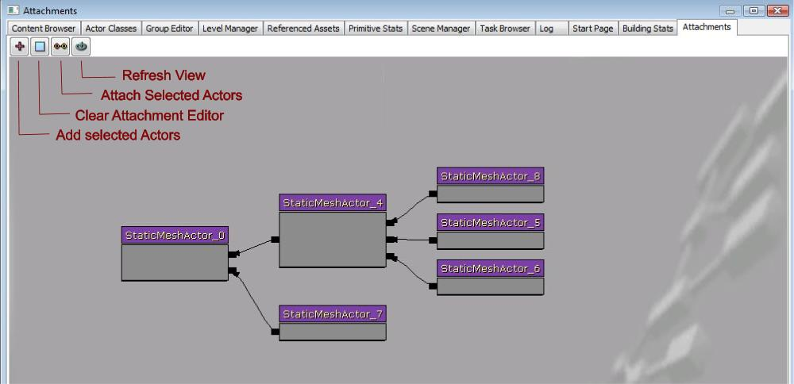
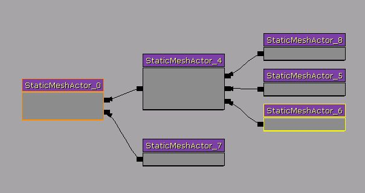
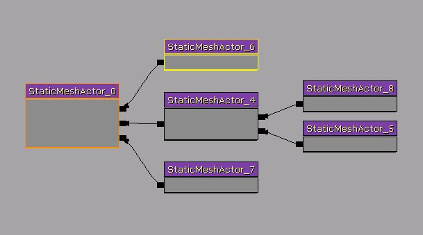

UDN
Search public documentation:
AttachmentsBrowserReferenceJP
English Translation
中国翻译
한국어
Interested in the Unreal Engine?
Visit the Unreal Technology site.
Looking for jobs and company info?
Check out the Epic games site.
Questions about support via UDN?
Contact the UDN Staff
中国翻译
한국어
Interested in the Unreal Engine?
Visit the Unreal Technology site.
Looking for jobs and company info?
Check out the Epic games site.
Questions about support via UDN?
Contact the UDN Staff
Attachment Editor (アタッチメントエディタ)
ドキュメント概要: エディタ内の Attachment Editor (アタッチメントエディタ) タブ使用に関する概要。 ドキュメントの変更ログ: 2010 年 2 月 16 日に James Golding によって作成。概観
Unreal では、どちらかというと複雑なグループを形作るために、(Base プロパティを使用して) アクタを関連付けする必要がある場合があります。これは、プロパティ ウィンドウのロックやアンロック、Base プロパティの検索などに関わってくるので、かなり面倒なプロセスとなります。また、グループに戻り、何が何に関連付けられているかを理解したり、必要な場合リファクタしたりすることが困難です。 これを手助けするために、新しい 'Attachments (アタッチメント)' タブがブラウザにあります。これを、グラフィック的にオブジェクトがどのようにつながっているかを簡単に見ることができる、そしてセットアップを編集することができる「メモ帳」のようなものと考えてみてください。
アクタの追加
このエディタを使用するには、まず作業したいレベルで 1 つ、または複数のアクタを選択する必要があります。選択したら、'Attachments (アタッチメント)' タブにいき、'+' ボタンをクリックします。これは、関連付けされているアクタや関連付けされているものすべてとともに、これらのアクタを作業スペースに追加します。いくつでも好きなだけアクタを追加することができます。ベースは左側にあり、子アクタは右側にあります。Attachment Editor (アタッチメントエディタ) でアクタを選択すると、この選択状態は Level ビューポートでも反映されます。 Attachment Editor (アタッチメントエディタ) は Kismet に似ていますが、Kismet のツールでできるようにノードを移動させることはできません。アクタのアタッチ
アクタがベースとしているものを変更したい場合は、以下のプロセスを踏みます。 1) ベースを変更したいと思っている 1 つ (または複数) のアクタを選択します。 2) さらに、新しいベースにしたいアクタを選択します。
2) さらに、新しいベースにしたいアクタを選択します。

3) [Alt] + [B]、またはツールバーの 'Attach Actors (アクタのアタッチ)' ボタンを押します。